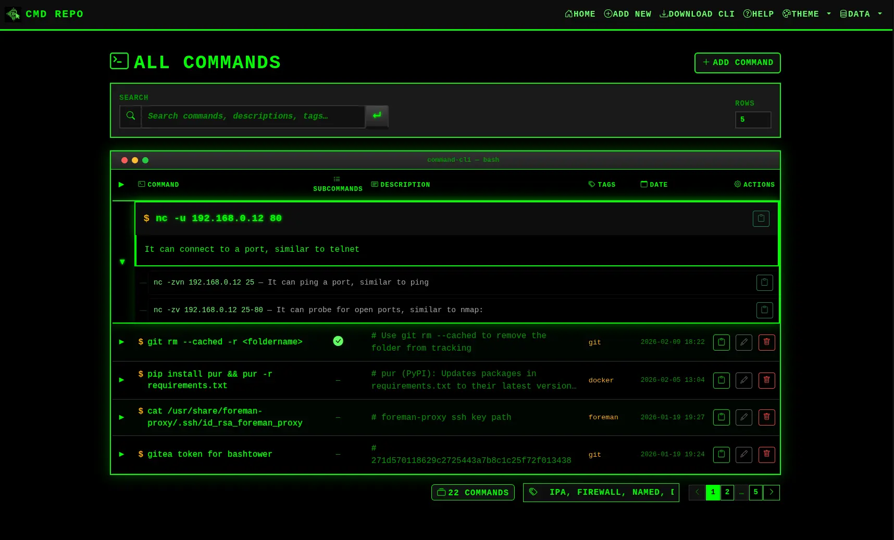

Command-CLI
Store, search & manage your shell commands — via web UI or CLI.

✨ Features
- Web Interface — Clean Bootstrap 5 UI with search, pagination, and mobile support
- CLI Client — Pure Bash client for terminal workflows (
repocomcli) - Full-text Search — Search across commands, descriptions, tags, and subcommand text
- Copy to Clipboard — One-click copy from web or CLI
- Export / Import — Backup and restore your commands as JSON
- Docker Ready — Easy deployment with persistent storage
- Tagging — Organize commands with comma-separated tags
🐳 Quick Start (Docker)
docker run -d \
--name command-cli \
--restart unless-stopped \
-p 5001:5001 \
-v command-cli-data:/app/instance \
ftsiadimos/command-cli-image:latestOpen http://localhost:5001 in your browser.
🖥️ CLI Client
Use repocomcli to manage commands directly from the terminal:
# List all commands
repocomcli list
# Search commands
repocomcli search docker
# Add a new command
repocomcli add "git push" -d "Push to remote" -t gitThis page is served from the repository's docs/ folder via GitHub Pages.